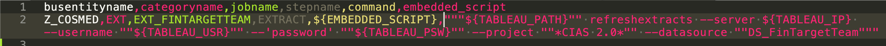
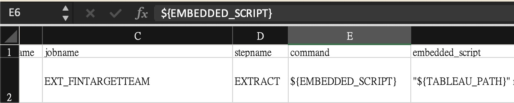

Python 的基礎 - Package 的使用與安裝 2¶
剛剛我們成功連線到 Trinity Repository 並能夠拉取裡面的資料了
現在可以搭配剛才的輸出檔案，將想要的資料輸出成報表
不多說，小練習 GO
小練習 1¶
請盤點出剛才的 Job 的 Script，並輸出成報表
For Your Information
剛才的 Job 是在 「 康是美 」 使用的 Tableau Command refreshextracts
JobStep 全部都是 External Command ， 並且是以 EMBEDDED_SCRIPT 執行
這邊我們就不解釋怎麼從 stepxml 中 ， 取出 Command ， SQL 如下
SQL
select b2.busentityname, j2.categoryname, j.jobname, js.stepname
, unnest(xpath('//prop[@name="command"]/@value', js.xmldata::xml))::text as COMMAND
, unnest(xpath('//prop[@name="scriptsql"]/@value', js.xmldata::xml))::text as EMBEDDED_SCRIPT
from job j
left join jobstep js on j.jobuid = js.jobuid
left join jobcategory j2 on j.categoryuid = j2.categoryuid
left join busentitycategory b on j.categoryuid = b.categoryuid
left join busentity b2 on b.busentityuid = b2.busentityuid
where j.activate = '1'
and b2.busentityname = 'Z_COSMED'
and j2.categoryname = 'EXT'
小練習 1 參考解答¶
import psycopg2
# 連線 94 這麼簡單
connection = psycopg2.connect(host='10.140.0.2', dbname='trinity', user='trinity', password='trinity')
# Create Cursor
cursor = connection.cursor()
# 三個單引號 --> String
sql = """
select b2.busentityname, j2.categoryname, j.jobname, js.stepname
, unnest(xpath('//prop[@name="command"]/@value', js.xmldata::xml))::text as COMMAND
, unnest(xpath('//prop[@name="scriptsql"]/@value', js.xmldata::xml))::text as EMBEDDED_SCRIPT
from job j
left join jobstep js on j.jobuid = js.jobuid
left join jobcategory j2 on j.categoryuid = j2.categoryuid
left join busentitycategory b on j.categoryuid = b.categoryuid
left join busentity b2 on b.busentityuid = b2.busentityuid
where j.activate = '1'
and b2.busentityname = 'Z_COSMED'
and j2.categoryname = 'EXT'
"""
# 執行 SQL
cursor.execute(sql)
f = open('file/report.csv', 'w', encoding='UTF-8')
# Set Columns
column = ('busentityname','categoryname','jobname','stepname','command','embedded_script',)
f.write(','.join(column))
f.write('\n')
# cursor object is iterable
for rs in cursor:
f.write(','.join(rs))
f.write('\n')
f.close()
輸出成報表後
用 Excel 給他打開下去吧！
Note
這次輸出的報表中沒有中文
可以放心直接用 excel 打開
套件 Pandas¶
如果你用 Notepad++ 之類的編輯器打開剛才的報表檔案 CSV
會發現 Excel 中 Embedded_script 裡 "${TABLEAU_PATH}" 的雙引號不見了
這是因為我們沒有特別去處理 雙引號 的問題
CSV 標準格式中有如下的定義
Important
僅節錄部分
RFC 4180 standard
Any field may be quoted (with double quotes).
Fields containing a line-break, double-quote or commas should be quoted. (If they are not, the file will likely be impossible to process correctly.)
If double-quotes are used to enclose fields, then a double-quote in a field must be represented by two double-quote characters.
上述標準簡單來說
一個欄位的值，若包含
換行 、 雙引號 、 逗號的話，必須以雙引號來包覆如果要使用包含
雙引號的欄位值，則必須以兩個雙引號表示
那我們勢必在寫檔時，要去替換有雙引號的地方
很麻煩吧 ！
沒事 ！ 這邊有好用的套件 Pandas 幫我們處理
安裝 Pandas¶
一樣使用 pip 來安裝
如果你在安裝 Python 時選用 Anaconda 的安裝包的話，不必再裝，Anaconda 有自帶
pip3 install pandas
測試是否安裝成功
python3 -c 'import pandas as pd'
Note
前面我們 import 套件後
都是這樣用
import psycopg2
psycopg2.FUNCTION_NAME
這邊我自己的習慣會簡化 pandas 的名子
import pandas as pd
pd.FUNCTION_NAME
使用 Pandas¶
Pandas 是一個高效能且強力的資料分析套件
它提供了 DataFrame 的資料型態 ， 非常像 Excel 的資料表
而且可以讀取 Excel(.xlsx .xls) 、 CSV(.csv) 還可以直接讀取 DB Table
這邊我們來直接讀 DB Table ， 並且輸出成 CSV
Pandas Read DB¶
pandas.read_sql(sql, con, index_col=None, coerce_float=True, params=None, parse_dates=None, columns=None, chunksize=None)
重要的大概是前兩個 sql & con
其他的詳細請看 Doc
sql
可以直接用 String 的方式傳入 SQL Statement
con
這個稍微特殊一點
目前還可以使用 DBAPI2 Object
也就是 psycopg2 的 Connection Object 可以使用
Note
Pandas 文件中寫道：
con : SQLAlchemy connectable, str, or sqlite3 connection
Using SQLAlchemy makes it possible to use any DB supported by that library. If a DBAPI2 object, only sqlite3 is supported. The user is responsible for engine disposal and connection closure for the SQLAlchemy connectable.
目前還可以用，但未來不確定是否能繼續用 psycopg2 的 Connection
文件中建議使用 SQLAlchemy Library
import pandas as pd
df = pd.read_sql(sql=sql, con=connection)
df
| busentityname | categoryname | jobname | stepname | command | embedded_script | |
|---|---|---|---|---|---|---|
| 0 | Z_COSMED | EXT | EXT_FINTARGETTEAM | EXTRACT | ${EMBEDDED_SCRIPT} | "${TABLEAU_PATH}" refreshextracts --server ${T... |
| 1 | Z_COSMED | EXT | EXT_STOCKSALES_DATETYPE | EXTRACT | ${EMBEDDED_SCRIPT} | "${TABLEAU_PATH}" refreshextracts --server ${T... |
| 2 | Z_COSMED | EXT | EXT_STOREHOURSALES | EXTRACT | ${EMBEDDED_SCRIPT} | "${TABLEAU_PATH}" refreshextracts --server ${T... |
| 3 | Z_COSMED | EXT | EXT_TAXREFUND | EXTRACT | ${EMBEDDED_SCRIPT} | "${TABLEAU_PATH}" refreshextracts --server ${T... |
| 4 | Z_COSMED | EXT | EXT_TANAITEMSALES | EXTRACT | ${EMBEDDED_SCRIPT} | "${TABLEAU_PATH}" refreshextracts --server ${T... |
| 5 | Z_COSMED | EXT | EXT_TANADETAILSALES_MON | EXTRACT | ${EMBEDDED_SCRIPT} | "${TABLEAU_PATH}" refreshextracts --server ${T... |
| 6 | Z_COSMED | EXT | EXT_TANADETAILSALES | EXTRACT | ${EMBEDDED_SCRIPT} | "${TABLEAU_PATH}" refreshextracts --server ${T... |
| 7 | Z_COSMED | EXT | EXT_STORESALESTARGET_MONTH | EXTRACT | ${EMBEDDED_SCRIPT} | "${TABLEAU_PATH}" refreshextracts --server ${T... |
| 8 | Z_COSMED | EXT | EXT_STORESALESTARGET | EXTRACT | ${EMBEDDED_SCRIPT} | "${TABLEAU_PATH}" refreshextracts --server ${T... |
| 9 | Z_COSMED | EXT | EXT_STOREITEMSALES | EXTRACT | ${EMBEDDED_SCRIPT} | "${TABLEAU_PATH}" refreshextracts --server ${T... |
| 10 | Z_COSMED | EXT | EXT_KEYITEMEVENTDETAIL | EXTRACT | ${EMBEDDED_SCRIPT} | "${TABLEAU_PATH}" refreshextracts --server ${T... |
| 11 | Z_COSMED | EXT | EXT_STOREGROUPSALES | EXTRACT | ${EMBEDDED_SCRIPT} | "${TABLEAU_PATH}" refreshextracts --server ${T... |
| 12 | Z_COSMED | EXT | EXT_STOREDAY | EXTRACT | ${EMBEDDED_SCRIPT} | "${TABLEAU_PATH}" refreshextracts --server ${T... |
| 13 | Z_COSMED | EXT | EXT_STOCKSTOREITEM_MON | EXTRACT | ${EMBEDDED_SCRIPT} | "${TABLEAU_PATH}" refreshextracts --server ${T... |
| 14 | Z_COSMED | EXT | EXT_STOCKSALES_14D | EXTRACT | ${EMBEDDED_SCRIPT} | "${TABLEAU_PATH}" refreshextracts --server ${T... |
| 15 | Z_COSMED | EXT | EXT_STOCKITEMSALES | EXTRACT | ${EMBEDDED_SCRIPT} | "${TABLEAU_PATH}" refreshextracts --server ${T... |
| 16 | Z_COSMED | EXT | EXT_PROMOITEMSALES | EXTRACT | ${EMBEDDED_SCRIPT} | "${TABLEAU_PATH}" refreshextracts --server ${T... |
| 17 | Z_COSMED | EXT | EXT_PAYMENTSALES | EXTRACT | ${EMBEDDED_SCRIPT} | "${TABLEAU_PATH}" refreshextracts --server ${T... |
| 18 | Z_COSMED | EXT | EXT_PAYMENTPROMOSALES | EXTRACT | ${EMBEDDED_SCRIPT} | "${TABLEAU_PATH}" refreshextracts --server ${T... |
| 19 | Z_COSMED | EXT | EXT_KEYITEMEVENTTARGET | EXTRACT | ${EMBEDDED_SCRIPT} | "${TABLEAU_PATH}" refreshextracts --server ${T... |
| 20 | Z_COSMED | EXT | EXT_DEPTSALESTARGET | EXTRACT | ${EMBEDDED_SCRIPT} | "${TABLEAU_PATH}" refreshextracts --server ${T... |
| 21 | Z_COSMED | EXT | EXT_ITEMSALES | EXTRACT | ${EMBEDDED_SCRIPT} | "${TABLEAU_PATH}" refreshextracts --server ${T... |
| 22 | Z_COSMED | EXT | EXT_INVOICESALES | EXTRACT | ${EMBEDDED_SCRIPT} | "${TABLEAU_PATH}" refreshextracts --server ${T... |
| 23 | Z_COSMED | EXT | EXT_INVOICEDETAILSALES_TODAY | EXTRACT | ${EMBEDDED_SCRIPT} | "${TABLEAU_PATH}" refreshextracts --server ${T... |
| 24 | Z_COSMED | EXT | EXT_INVOICEDETAILSALES_FAST | EXTRACT | ${EMBEDDED_SCRIPT} | "${TABLEAU_PATH}" refreshextracts --server ${T... |
| 25 | Z_COSMED | EXT | EXT_INCOMESTATEMENT_A | EXTRACT | ${EMBEDDED_SCRIPT} | "${TABLEAU_PATH}" refreshextracts --server ${T... |
| 26 | Z_COSMED | EXT | EXT_INCOMESTATEMENT | EXTRACT | ${EMBEDDED_SCRIPT} | "${TABLEAU_PATH}" refreshextracts --server ${T... |
| 27 | Z_COSMED | EXT | EXT_GROUPSALESTARGET | EXTRACT | ${EMBEDDED_SCRIPT} | "${TABLEAU_PATH}" refreshextracts --server ${T... |
Pandas Export CSV¶
最後，讓 Pandas 幫我們輸出 CSV
df.to_csv('file/report_pandas.csv', index=False)
Note
這邊的 index 參數，是指是否要輸出在 Pandas 中使用的 index
通常我都不輸出，畢竟那個 index 只有 Pandas 看得懂
可以比較看看 report.csv 與 report_pandas.csv 的差別
可以發現 Pandas 幫我們完成了雙引號的處理
一個欄位值用雙引號包覆
使用到雙引號的話，就用兩個雙引號表示

再用 Excel 打開看看， 應該會正確處理雙引號了
